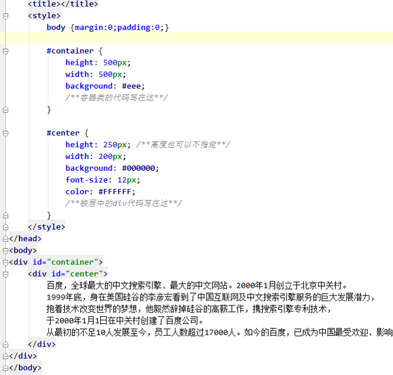
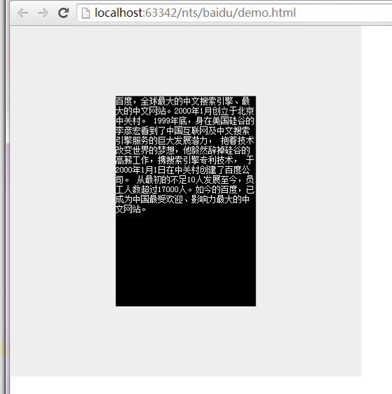
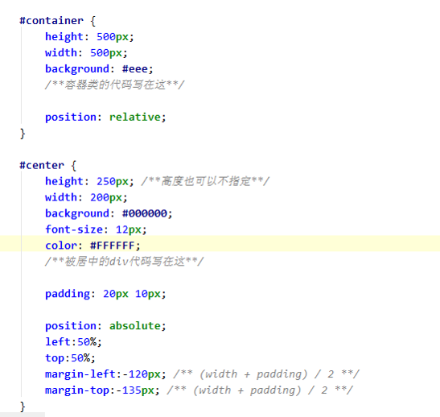
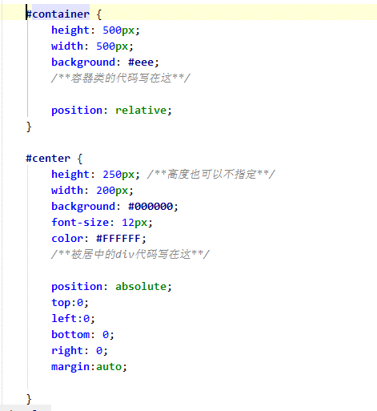
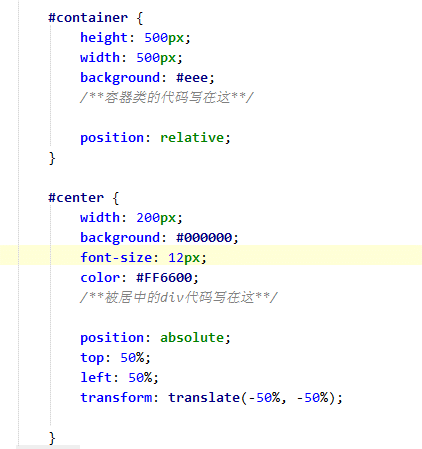
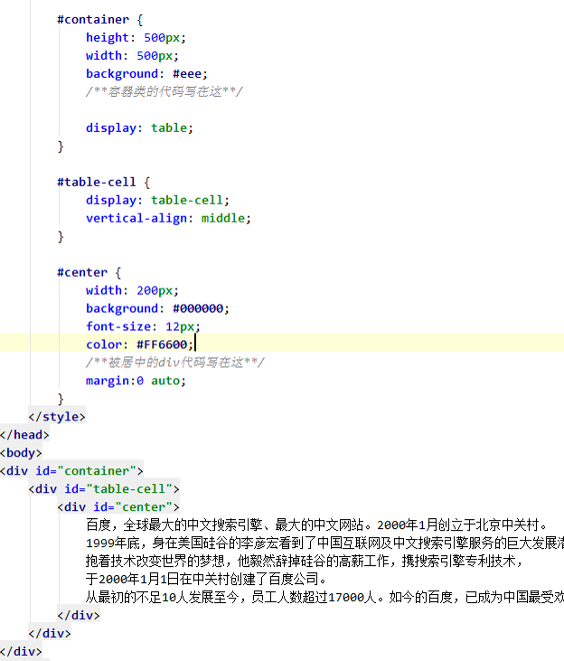
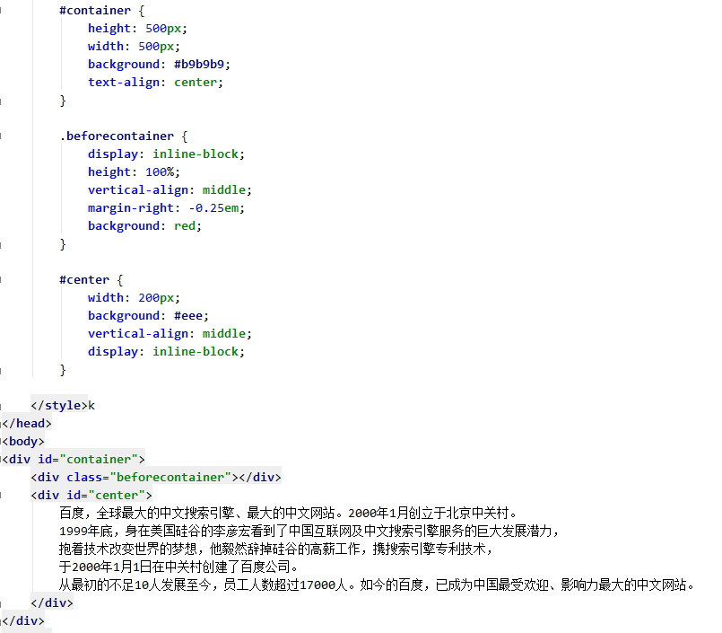
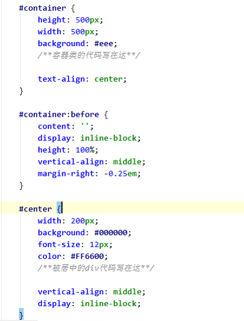
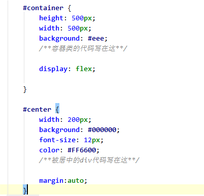
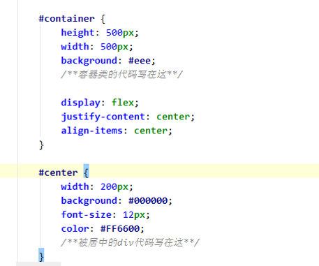

应用的地方比较普遍，这里有两个赤裸裸的栗子：
其实，垂直居中问题可以简化成这样：一个容器HTML元素(#container)，一个需要居中的HTML元素(#center)。特殊的情形下可能会出现body为#container，#center是图片,此处不予讨论。
#center 可能有高度，也可能没有，也可能是响应式的。总之，代码的结构如下图所示：

再有就是浏览器的兼容性问题：IE6,IE7.....不说了，都是泪。总之，我们要做的就是在相应的代码处填入代码以期达到下图目的。：

这种方案应该是最流行的，思路也比较简单，浏览器的兼容性(IE6+)也比较好，但是必须要指定#center的高度，也无法进行响应式处理(类似height:60%,max-width:400px；)

如果能确定#center高度，并且无需响应式，这种方案是最棒的！
 该方法兼容IE8+，虽然可以自适应，虽然padding可以不用操心，但是还是必须声明高度！关于这种方案的工作原理：
这种方案是方案一的一种延伸，它解决了方案一必须指定高度，不支持响应式的问题，但是浏览器兼容性不佳，只支持IE9+，但是在移动版的浏览器却可以放心的使用哦！

另外，这种方案可能需要在transform上加入前缀，不过如果有less和sass这样的东西就好多了，瞬间，又有了对IE的鄙视！
思路是这样的: <table><tr><td>I am Centered</td></tr></table>，代码是这样的：

思路为：期望在#container中:text-align:center;，在#center中：vertical-align:middle;达到目的，但是#center却无法撑开#container，咋办呢？
可以在#container里面加入一个多余的display为inline-block的div（作为#container的一个child），将#container的高度撑开，就像这样：

如果支持:before或者:after的浏览器，就可以高大山一些：

但是，还存在如下两个问题：
这个应该是最简单的，如下：

原理为：margin:auto;自动获取伸缩容器中剩余的空间，设置垂直方向margin值为auto，可以使伸缩项目在伸缩容器的两上轴方向都完全集中。我觉得，实际上相当于这样：

关于Flexbox，请参见 这里
但是flex的缺点也是显而易见的，不支持老旧的浏览器。
以上各种方案，各有优缺，希望大家赶紧提建议，我也将能够通用的代码全部整到了github上（这里）